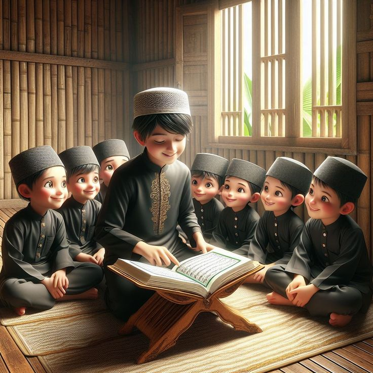

PONDOK PESANTREN KITA
Pondok pesantren pertama kali muncul diindonesia pada abad ke-14. Hal ini didasarkan pada "Babad Demak", sebuah karya tulis literatur klasik jawa, yang menyebutkan bahwa pondok pesantren pertama kali tumbuh pada masa Raden Rahmat atau Sunan Ampel. Masa ini berbarengan dengan periode kekuasaan Prabu Kertawijaya Majapahit. Pondok pesantren adalah lembaga pendidikan islam yang mengajarkan, mengembangkan, dan menyebarkan agama islam dengan sistem asrama atau pondok. Pesantren memiliki peran yang besar dalam mencerdaskan anak bangsa. Istilah pesantren berasal dari kata "pe-santri-an". Kata "Santri" berasal dari bahasa jawa, yaitu "cantik", yang berarti murid padepokan. Sedangkan kata "Pondok" berasal dari bahasa arab, yaitu Funduuq yang berarti penginapan.
PENDIDIKAN PESANTREN
Jika diklasifikasikan, pendidikan pesantren non formal dikenal sebagai pendidikan pesantren salafiah yang berbasis pada pengajian kittab kuning. Sedangkan pendidikan pesantren formalnya terdiri dari pendidikan diniyah formal (PDF), satuan pendidikan mu'adaalah (SPM), jenjang ula (setara SD/MI), wustha (setara SMP/MTS), ulya (setara SMA/MA), untuk jenjang pendidikan tinggi formal disebut Ma'had Aly (meraih gelar sarjana, magister, hingga doktor). Para santri yang bermukim di pesantren dapat mengikuti pendidikan paket A, B, C. Dengan begitu legal ijazah mereka dapat setara dengan SD, SMP hingga SMA.
Dalam pendidikan islam nonformal, ada yang disebut madrasah diniyah takmiliyah (MDT). Model pembelajaran ini juga diajarkan membaca huruf hijaiyah, menulis arab, kitab akhlak, nahwu-sharaf dasar, fiqih dasar (misalnya kitab safinah, taqrib dan lain-lain). Pesantren memiliki beberapa metode pembelajaran diantaranya, pertama "metode sorogan" yaitu murid secara perorangan dengan guru atau dikenal juga dengan metode individual, kedua "metode bandongan atau seringkali disebut system weton" yaitu sekelompok murid 5-500 santri mendengarkan seorang guru, ketiga "metode halaqoh" yaitu kelompok kelas dari system weton/bandongan yang berarti lingkaran murid atau lingkaran belajar santri, yang dipimpin langsung oleh seorang kyai atau ustadz atau santri senior untuk membahas dan mengkaji suatu persoalan yang telah ditentukan sebelumnya, keempat "metode tahfiz atau hafalan" yaitu umumnya dipakai untuk menghafal kitab-kitab tertentu atau Al-Qur'an baik surah pendek maupun keseluruhan, kelima "metode muazakaroh atau bathsul masa'il" yaitu metode pertemuan ilmiah, yang membahas masalah diniyah, ibadah, akidah, dan masalah agama pada umumnya.
Karakteristik pendidikan yang dianut oleh pesantren adalah adanya hubungan yang akrab dan dekat antara santri dengan kyainya, kepatuhan santri terhadap kyai, hidup hemat dan sederhana benar-benar diwujudkan dalam lingkungan pesantren, kemandirian terasa dipesantren, memiliki jiwa tolong menolong dan suasana persaudaraan sangat mewarnai pergaulan dipesantren, memiliki sikap disiplin sangat dianjurkan, berani menderita untuk mencapai tujuan merupakan salah satu segi pendidikan yang diperoleh para santri, pemberian ijazah ini menandakan restu kyai kepada santrinya.
TUJUAN
.jpg.jfif)
Tujuan didirikannya pondok pesantren, pada dasarnya ada dua hal yaitu "Tujuan Khusus" yakni mempersiapkan para santri untuk menjadi oram alim dalam ilmu agama yang diajarkan oleh kyai dan mengamalkannya dalam masyarakat. "Tujuan Umum" yakni membimbing anak didik untuk menjadi manusia yang berkepribadian islam yang sanggup dengan ilmu agamanya menjadi muballigh islam dalam masyarakat sekitar melalui ilmu dan amalnya. Pondok pesantren juga bertujuan membentuk santri menjadi pribadi yang berakhlak mulia, pembentukan karakter dan etika, pengembangan karakter hidup dan lain-lain.
KEGIATAN
Kegitan yang ada di pesantren meliputi Kegiatan keagamaan seperti shalat berjama'ah, menghafal Al-Qur'an, dan belajar agama. Kegiatan kesantrian seperti lomba antar santri dan lomba kebersihan. Kegiatan belajar mengajar seperti supervisi pendidikan, in house training. Kegiatan ekstrakulikuler seperti organisasi kepramukaan dan organisasi santri. Kegiatan kerja bakti seperti bersih-bersih pondok pesantrenatau membangun bangunan. Adapun Kegiatan lainnya seperti Qiraah, Kaligrafi, Hadroh, Music, Sainsenpreneur, English club dan Komputer.
INFORMASI LANJUT
SILAHKAN HUBUNGI :
Sosial media : @ponpesskitaaa
Nomor telp/Email : +62 85********/ponpesskitaaa@gmail.com
Lokasi : Jl. anggrek bulan no.86